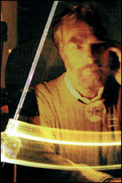

|
 A test subject attempts to change the arc of a pendulum solely by the power of his mind. 3: Weighing the Evidence Based on her work at PEAR, Brenda Dunne believes the odds are slim indeed that PK experimental results can be put down to chance. "When we look across the full spectrum of all our experiments, where there's a real random source, the overall likelihood that this is chance is a couple parts in 10 to the 13th power. We're confident they're real and not artifacts of some statistical or environmental influence. We've refined our designs over the years to preclude any artifacts from altering the output. Nothing can eliminate the effects." Because most researchers agree that their independent experiments show mental powers affecting physical systems, they have moved from asking "Does it exist?" to "What is it?" "We're not worried about proving [the influence of PK] to people," says Broughton. "If they're not satisfied with the weight of data now, they won't ever be satisfied. Now, we want the process behind it." Dr. Dean Radin is director of the Consciousness Research Division of the Harry Reid Center for Environmental Studies at the University of Las Vegas, Nevada. One early experiment at the Center involved the assistance of another Las Vegas group with a well-vested interest in mind-over-machine research -- the Continental Casino. Radin cross-referenced the casino's daily data for its table games -- blackjack, poker, craps, keno, and slots -- with the daily data for specific environmental factors for the years 1991 to 1994. According to Radin, previous research -- and folklore -- suggested that the lunar cycle and the geomagnetic field affect psi performance. Theoretically, environmental forces could affect ferromagnetic materials in the brain that aid in navigation (like a pigeon using magnetic lines of force), as well as psychic abilities. "We predicted the payouts would increase around the full moon, and also when the geomagnetic field was 'quiet' (with fewer fluctuations caused by the earth's core, other planets, and solar activity). "In both cases we found significant correlations in the predicted direction. Since then, we've discovered similar research completed for state and national lotteries, including the Australian, French, and Soviet lotteries. Their results were consistent with ours." Radin was less interested in gambling than the pervasiveness of psi powers. "If PK is out there and used all the time in places like casinos, it would be interesting if there was no correlation [between lab results and results in the field], but the evidence is there. We call it 'psi in the large.' It's not just little results in the lab or individual stories, but large-scale effects that haven't been studied very long. There are probably social consequences we haven't identified." Radin agrees with Broughton that the emphasis for human consciousness researchers has switched from proof to process. "Over the years I've done many direct application studies to provide proof of the effect itself," Radin said. "After 10 years of research, I've decided that PEAR and 75 others doing this work since the. 1950s have seen the same results. There are small but persistent effects. So it's basically proven. Most of my colleagues gave up on proof studies five to 10 years ago. Now they're working on process studies -- under which conditions do the effects appear, which test subjects do better, and what are the differences in their personalities?" Copyright (c) 1997 Llewellyn Worldwide, Ltd. http://www.llewellyn.com
|